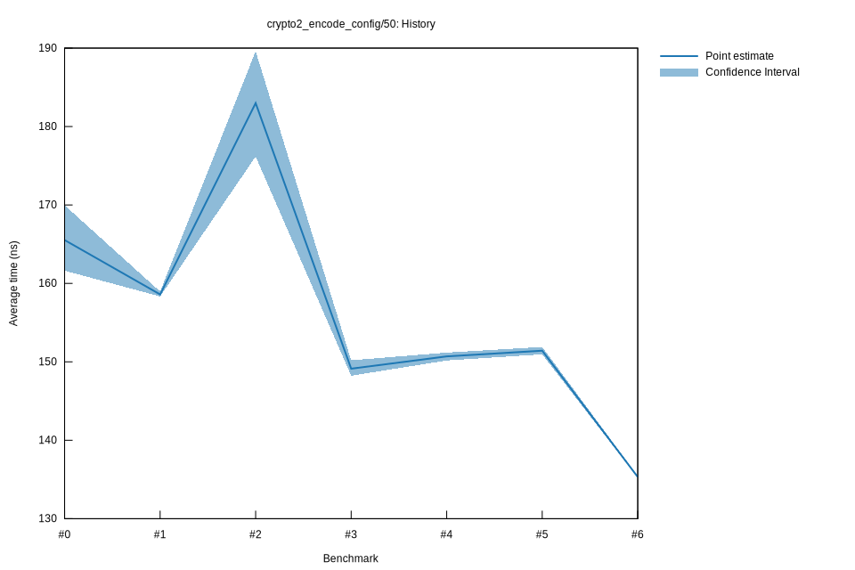

# 62022-10-16T19:53:39+03:00
|
Lower Bound |
Estimate |
Upper Bound |
| Value: |
135.22ns |
135.32ns |
135.45ns |
| Throughput: |
359.68MiB/s |
359.43MiB/s |
359.09MiB/s |
| Change in Value: |
-10.810% |
-10.383% |
-9.9350% |
| Change in Throughput: |
+12.120% |
+11.586% |
+11.031% |
No change in performance detected.
# 52022-10-16T17:15:38+03:00
|
Lower Bound |
Estimate |
Upper Bound |
| Value: |
150.95ns |
151.42ns |
151.89ns |
| Throughput: |
322.20MiB/s |
321.20MiB/s |
320.20MiB/s |
| Change in Value: |
+0.2251% |
+0.9143% |
+1.6019% |
| Change in Throughput: |
-0.2246% |
-0.9060% |
-1.5767% |
No change in performance detected.
# 42022-10-15T17:10:22+03:00
|
Lower Bound |
Estimate |
Upper Bound |
| Value: |
150.17ns |
150.69ns |
151.18ns |
| Throughput: |
323.88MiB/s |
322.75MiB/s |
321.72MiB/s |
| Change in Value: |
-3.0258% |
-1.6491% |
-0.4027% |
| Change in Throughput: |
+3.1203% |
+1.6768% |
+0.4043% |
No change in performance detected.
# 32022-10-15T17:06:49+03:00
|
Lower Bound |
Estimate |
Upper Bound |
| Value: |
148.23ns |
149.13ns |
150.20ns |
| Throughput: |
328.13MiB/s |
326.14MiB/s |
323.83MiB/s |
| Change in Value: |
-15.925% |
-13.122% |
-10.274% |
| Change in Throughput: |
+18.942% |
+15.104% |
+11.451% |
No change in performance detected.
# 22022-10-15T16:46:00+03:00
|
Lower Bound |
Estimate |
Upper Bound |
| Value: |
176.18ns |
182.99ns |
189.60ns |
| Throughput: |
276.07MiB/s |
265.80MiB/s |
256.53MiB/s |
| Change in Value: |
+7.0901% |
+10.452% |
+13.755% |
| Change in Throughput: |
-6.6207% |
-9.4627% |
-12.092% |
No change in performance detected.
# 12022-10-08T17:24:06+03:00
|
Lower Bound |
Estimate |
Upper Bound |
| Value: |
158.34ns |
158.59ns |
158.96ns |
| Throughput: |
307.18MiB/s |
306.68MiB/s |
305.97MiB/s |
| Change in Value: |
-3.0606% |
-1.6095% |
-0.3691% |
| Change in Throughput: |
+3.1572% |
+1.6358% |
+0.3705% |
No change in performance detected.
# 02022-10-08T17:05:13+03:00
|
Lower Bound |
Estimate |
Upper Bound |
| Value: |
161.62ns |
165.53ns |
169.96ns |
| Throughput: |
300.93MiB/s |
293.83MiB/s |
286.17MiB/s |